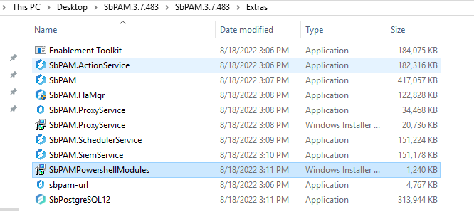
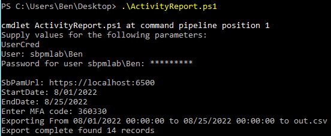
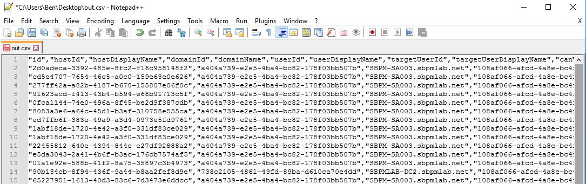

Summary
Exporting the "Activity Log" report is a common auditing and compliance use case. This article provides a scripted method of exporting the Activity Log data from SbPAM.
Instructions
1. On your SbPAM server, ensure that PowerShell 7.1 is installed. It can be obtained from the official PowerShell github repository. (Note: This specific version of PowerShell is a necessary prerequisite to running the SbPAM API. Do not install PowerShell 7.2+)2. Locate the "Extras" folder, which was packaged alongside your SbPAM installer. Run the SbPAMPowerShellModules installer.

3. In your preferred text editor, paste the following PowerShell script. Save it as "ActivityReport.ps1".
[cmdletbinding()]
param(
[Parameter(Mandatory)][PSCredential]$UserCred,
[Parameter()][String]$UserCode = $null,
[Parameter(Mandatory)][String]$SbPamUrl,
[Parameter(Mandatory)][datetime]$StartDate,
[Parameter(Mandatory)][datetime]$EndDate,
[Parameter()][string]$FilePath = "out.csv"
)
Import-Module SbPAMAPI -Force
function Renew-Token {
[CmdletBinding()]
param (
[string]
$Token,
$Uri
)
$mfaObj = Convert-SbPAMToken $Token
if ($null -eq $global:expiration) {
$global:expiration = Get-Date -UnixTimeSeconds $mfaObj.exp
}
if ($global:expiration -lt (Get-Date).AddMinutes(7)) {
Write-Host "$(Get-Date) Refreshing token"
$Token = Invoke-SbPAMRest -Uri "$Uri/api/v1/UserToken" -Token $Token -ErrorAction Stop -SkipCertificateCheck
$mfaObj = Convert-SbPAMToken $Token
$global:expiration = Get-Date -UnixTimeSeconds $mfaObj.exp
}
return $Token
}
function Get-SbPAMActivitySessionReport {
param(
$Uri,
$Token,
$StartDate,
$EndDate
)
$Token = Renew-Token -Uri $Uri -Token $Token
$Skip = 0
$Take = 100
$StartDateString = $StartDate.ToUniversalTime().ToString("yyyy-MM-ddTHH:mm:ssZ")
$EndDateString = $EndDate.ToUniversalTime().ToString("yyyy-MM-ddTHH:mm:ssZ")
$ApiUri = "$($Uri)/api/v1/ActivitySession/Search?skip=$($Skip)&filterText=&filterDateTimeMin=$($StartDateString)&filterDateTimeMax=$($EndDateString)&filterTopUsersType=1&take=$Take"
$Data = @()
$Results = Invoke-SbPAMRest -Uri $ApiUri -SkipCertificateCheck -Token $Token
while ($Results.Data.Length -ge $Take) {
$Data += $Results.Data
$Skip += $Take
Write-Progress -Activity "Fetching activity report from $StartDate to $EndDate" -PercentComplete 0 -Status "$Skip of $($Results.recordsTotal) $($Results.Data.Length)"
$ApiUri = "$($Uri)/api/v1/ActivitySession/Search?skip=$($Skip)&filterText=&filterDateTimeMin=$($StartDateString)&filterDateTimeMax=$($EndDateString)&filterTopUsersType=1&take=$Take"
$Results = Invoke-SbPAMRest -Uri $ApiUri -SkipCertificateCheck -Token $Token
}
$Data += $Results.Data
$Data
}
# "https://192.168.77.99:6500/api/v1/ActivitySession/Search?skip=0&filterText=&filterDateTimeMin=2022-07-01T05:00:00.000Z&filterDateTimeMax=2022-08-24T04:59:59.999Z&filterTopUsersType=1&take=30"
# Create the web session
$WebSession = New-Object Microsoft.PowerShell.Commands.WebRequestSession
# Set up the user credentials - MFA and JWT objects
$userToken = Get-SbPAMToken -Credential $userCred -Uri $SbPamUrl -WebSession $WebSession -SkipCertificateCheck -ErrorAction Stop
if ("" -eq $UserCode -or $null -eq $UserCode) {
$userCode = Read-Host -Prompt "Enter MFA code"
}
$userToken = Get-SbPAMMfaToken -Uri $SbPamUrl -Token $userToken -Code $userCode -WebSession $WebSession -SkipCertificateCheck -ErrorAction Stop
Write-Progress -Activity "Fetching activity report from $StartDate to $EndDate" -PercentComplete 0 -Status "Fetching..."
Write-Host "Exporting From $StartDate to $EndDate to $FilePath"
$Data = Get-SbPAMActivitySessionReport -Uri $SbpamUrl -Token $userToken -StartDate $StartDate -EndDate $EndDate
$Data | ConvertTo-Csv -NoTypeInformation -UseQuotes Always | Out-File -FilePath $FilePath
Write-Host "Export complete found $($Data.Length) records"
4. Open up PowerShell 7. Navigate to the directory containing ActivityReport.ps1, and execute the following command:
.\ActivityReport.ps15. You will be prompted for an SbPAM administrator username and password, your SbPAM URL, and an MFA code (if applicable).

6. Your activity data will then be output to a file called "out.csv".
